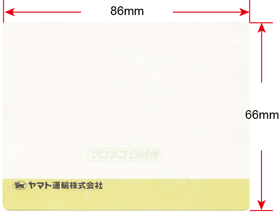

DMを安く送る方法_実践編_A4ハガキ
3回目の「DMを安く送る方法_実践編_A4ハガキ」です。
もし以前2回を見逃している場合は下記をご覧ください。
DMを安く送る方法_実例編_封筒
https://www.dm110.jp/DM_jissen_Fuutou_3358.html
DMを安く送る方法_実例編_DM発送会社使い分け
https://www.dm110.jp/DM_jissen_kaisyawake_3358.html
通常のDMは封筒に印刷物を入れて発送します。
しかし封筒を使わずにDMと同じような印刷量を安く送る方法があります。
１ A４ハガキ
２ A4圧着ハガキ
３ 圧着ハガキ（官製はがきサイズ）
これらの特徴は封筒に入れずに送るため「封筒代金」
「封筒印刷代金」「封入作業代金」が必要なくなります。
また封筒に入れないため受取人の開封作業がなくなり、反応率が高くなる傾向にあります。
デメリットとして、サンプルなどの同梱物を入れることができないことと
DM枚数が多い場合に対応できないことです。
１ Ａ４ハガキ
A4はがきとは
A4ハガキは厚紙A4サイズの紙に印刷して送るハガキです。
通常は封筒に入れずにそのまま発送します。
理論的には印刷面積は官製ハガキの約4倍になります。
しかし実際に文章の書ける面積はハガキの4倍ではなく約5倍位になります。
理由は余白部分の面積が少なくなるためです。
ただ宛名ラベル面積分だけ印刷面積が少なくなります。
料金
A4ハガキは封筒に入れませんので、「封筒代」「封筒印刷代」「封入作業代」が削減できます。
反対に紙の厚さを厚くしなければいけないので紙代金は少し値上がりします。
発送方法は郵便・ヤマトクロネコDM便、佐川郵メール便の3種類あります。
通常一番安くなる送り方はヤマトの「クロネコDM便」になります。(DM発送代行会社使用)
数量が10万枚100万枚の場合は郵便局も安くなります。
よく使われる理由
A4ハガキを多く利用しているのは「コンサルタント」「通販会社」「自動車関連」
「保険会社」「法人向けDM」「セミナー関係」「建築リフォーム関連」など、
DMをよく研究している業種です。
裏を返せばそれだけ魅力のある媒体であるといえます。
さらに言うと費用対効果が良いためです。
A4はがきで発送する場合、開封率が１００％であることがその一番の理由になっています。
紙の選び方
A4ハガキを使う場合にお客様よりの「返信はがき」、「FAX返信用紙」として使うこともできます。
この場合の注意点は、お客様がボールペンで書くことができる紙質を選ぶことです。
ボールペンで書くことができ厚みがある紙は「マットコート紙」になります。
同じ厚さサイズであれば、マットコート紙はコート紙よりも厚くなります。
紙の厚さは135㎏ぐらいであれば家庭用のFAX機からの返信も通常可能です。
注 意
宛名ラベルの大きさの空白部分を作って印刷する必要があります。
宛名ラベルの大きさは タテ66mm × ヨコ86mmですが
メディアボックスではラベル貼り作業の為に
75ｍｍ×95mmの空白スペースを作って頂く必要があります。
ヤマト運輸のクロネコDM便（旧メール便）の宛名ラベル

この宛名ラベルの場合にはクロネコDM便（旧メール便）の追跡調査ができます。
２ A４圧着ハガキ
A4圧着ハガキとは
A3サイズ用紙に両面印刷を行い半分に折り曲げて糊付けし、A4サイズにしたハガキです。
両面印刷A4紙2枚封入、あるいは片面印刷A4紙4枚封入と同じ印刷面積になります。
ただ宛名ラベル面積分だけ印刷面積が少なくなります。
またA4圧着ハガキを利用してのDMの数が少ないために目立ち興味を引きます。
料金
A4ハガキ同様に封筒に入れて送るDMに比べ
「封筒代」「封筒印刷代」「封入作業代」が削減できます。
反対に料金が増える部分として圧着を行う作業料金が必要になります。
場合によっては透明封筒に入れて送るDMのほうが安くなる場合もあります。
よく使われる利用方法
A4圧着ハガキの利用法として
・小カタログ
・詳しい案内
・商品説明
・料金表
などとしての利用が効果を上げています。
利用度合いはA4ハガキのほうが多く使われています。
まだコスト的なことと反応率などの問題で普及が遅れています。
紙の選び方
コート紙を使ったカラー印刷が通常のA4圧着ハガキになります。
しかし、コート紙で印刷を行うとお客様の書き込みができなくなります。
そのためメディアボックスではマットコート紙での印刷をお勧めしています。
注 意
DM発送代行会社を利用してA4圧着ハガキを送る方法が一番安くつきます。
ただし、A4圧着ハガキの場合にはDM発送代行会社により値段が大きく違う傾向にあります。
複数社の見積をとり比較検討を必ず行って下さい。